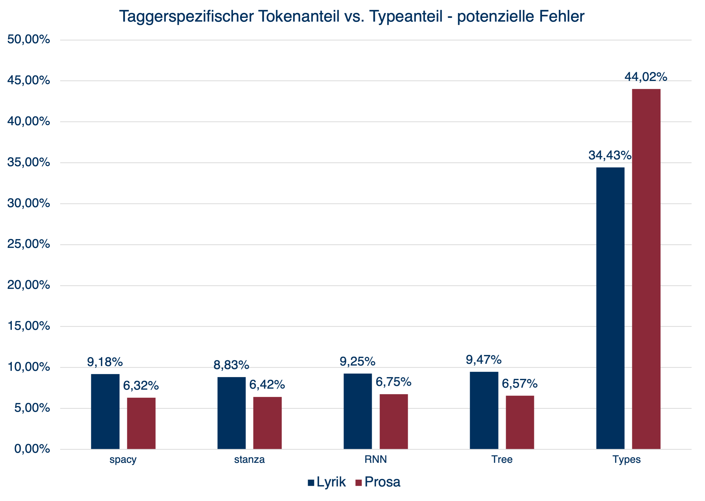
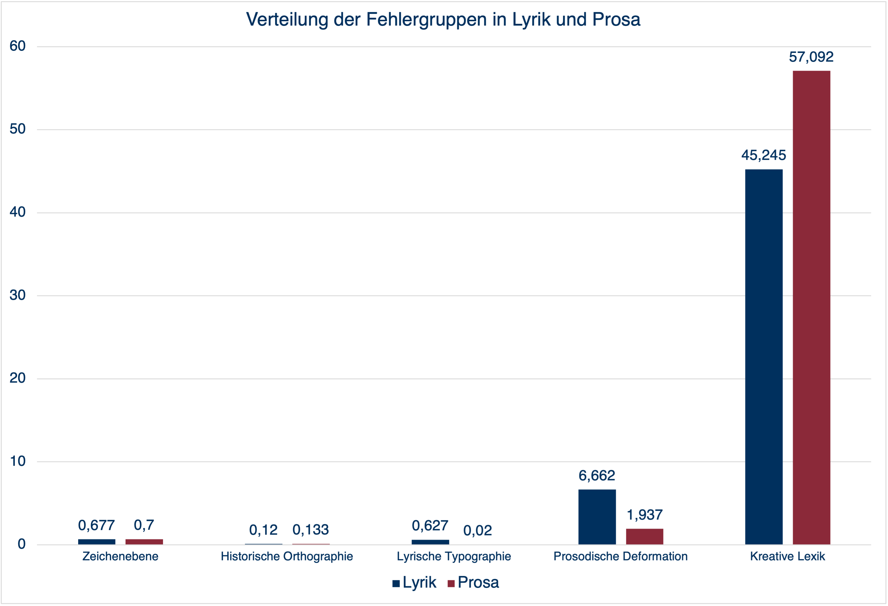

## Poesie als Fehler ### Ein **Tool Misuse** Experiment </br> <hr style="background-color:#8b2939; height: 2px;"/> </br> [Henny Sluyter-Gäthje](mailto:henny.sluyter-gaethje@uni-potsdam.de) und [Peer Trilcke](mailto:trilcke@uni-potsdam.de) </br> DHd2022 - Potsdam | 09.03.2022 -- ## Teaser -- ## Gliederung 1. [Problemhorizont](#3) 2. [Operationalisierung](#4) 3. [Analyse](#5) 4. [Ergebniss](#6) 5. [Kritik und Ausblick](#7) -- ## 1. Problemhorizont --- ### Annäherung durch Abweichung * * * --- ### Idee * Standardsprache * NLP-Tools * Fehler = Merkmal? -- ## 2. Operationalisierung --- ### Ansatz * Kein Gold-Standard * Workaround --- ### Korpora * Lyrikkorpus * 12 Autorïnnen * Von Hölderlin bis Tucholsky * Insgesamt 5.124 Gedichte * Kanonkorpus * 54 Autorïnnen * 1801 - 1883 * 100 Romane --- ### Pipeline --- ### Korpora - Tokenverteilung | | Lyrik | Prosa | |--------|----------|------------| |spacy | 397.924 | 3.967.566 | |stanza | 390.605 | *3.958.315* | |RNN | *390.325* | 3.977.869 | |Tree | **414.395** | **4.276.486** | | | | | |Types | 70.422 | 263.042 | --- ### Potenzielle Fehler  -- ## 3. Analyse --- ### Fehlertypologisierung * 13 Regeln zur Typologisierung des pFail-Sets * Anwendung in vordefinierter Reihenfolge * Mehrfachtypisierung nicht möglich --- ### Fehlergruppen </br> 1. Zeichenebene </br> </br> <table cellspacing="0" cellpadding="0" style="font-size: 70%;"> <tr> <td>Bezeichnung</td> <td>Beispiel</td> <td>Regel</td> </tr> <tr> <td>PUNC</td> <td>Wie im steilen Berggehänge, </br> Sonnenauf- und <span style="color:#8b2939">-untergänge</span> </br> Preisen Gott und die Natur.<a href="#9"><sup>1</sup></a></td> <td>Wenn im Type ein Satzzeichen (Ausnahme: Apostrophe und Bindestriche, bei denen vor und nach dem Bindestrich mindestens ein Buchstabe steht) vorkommt, typisiere</td> </tr> <tr> <td>SHORT</td> <td><span style="color:#8b2939">O</span> wie kenn ich sie so gut!<a href="#9"><sup>2</sup></a></td> <td>Wenn ein Type nur zwei Zeichen oder weniger aufweist, typisiere.</td> </tr> </table> --- ### Fehlergruppen </br> 2. Historische Orthographie </br> </br> <table cellspacing="0" cellpadding="0" style="font-size: 70%;"> <tr> <td>Bezeichnung</td> <td>Beispiel</td> <td>Regel</td> </tr> <tr> <td>ORTH_SZ</td> <td>Ein kleines Bäuchlein wie ein <span style="color:#8b2939">Fäßchen</span><a href="#9"><sup>3</sup></a> </td> <td>Ersetze “ß” im Lemma durch “ss” und prüfe im Wörterbuch; wenn im Wörterbuch zu finden, typisiere.</td> </tr> </table> --- ### Fehlergruppen </br> 3. Lyrische Typographie </br> </br> <table cellspacing="0" cellpadding="0" style="font-size: 70%;"> <tr> <td>Bezeichnung</td> <td>Beispiel</td> <td>Regel</td> </tr> <tr> <td>ORTH_UPPER</td> <td><span style="color:#8b2939">Mög</span> mit kalten Armen dich ereilen, [...]<a href="#9"><sup>4</sup></a></td> <td>Wenn ein Type am Anfang einer Zeile steht, ersetze initiale Großschreibung bei ADJ und VERB mit Kleinschreibung und prüfe im Wörterbuch; wenn im Wörterbuch zu finden, typisiere.</td> </tr> </table> --- ### Fehlergruppen 4.1 Prosodische Deformation <table cellspacing="0" cellpadding="0" style="font-size: 70%;"> <tr> <td>Bezeichnung</td> <td>Beispiel</td> <td>Regel</td> </tr> <tr> <td>ELISION_APO</td> <td>Und, <span style="color:#8b2939">nächt'ger</span> Mücke zu vergleichen,[...]<a href="#9"><sup>5</sup></a></td> <td>Wenn innerhalb eines Type ein Apostroph vorkommt, typisiere.</td> </tr> <tr> <td>ELISION_SIMPLE</td> <td>Märchenartig grüßen Rosen,</br>Und sie <span style="color:#8b2939">glühn</span> wie Liebesboten. –<a href="#9"><sup>6</sup></a></td> <td>Wenn ein Type auf [“nen”, “ner”, “ne”, “n”] endet und davor kein Vokal und kein “l” oder “r” steht, typisiere.</td> </tr> <tr> <td>ELISION_END</td> <td>Und ich will hier an meinem Ort</br><span style="color:#8b2939">Trompet</span> und Pauke rühren.<a href="#9"><sup>7</sup></a></td> <td>Ergänze am Ende eines NOUN ein “e” und prüfe im Wörterbuch; wenn im Wörterbuch zu finden, typisiere.</td> </tr> </table> --- ### Fehlergruppen 4.2 Prosodische Deformation <table cellspacing="0" cellpadding="0" style="font-size: 70%;"> <tr> <td>Bezeichnung</td> <td>Beispiel</td> <td>Regel</td> </tr> <tr> <td>EPITHESIS</td> <td>Führt über Berg und Aue</br>Daher die schönste <span style="color:#8b2939">Fraue</span> –<a href="#9"><sup>8</sup></a></td> <td>Tilge bei NOUN, die auf “e” enden, das “e” und prüfe im Wörterbuch; wenn im Wörterbuch zu finden, typisiere.</td> </tr> <tr> <td>CONTRACT</td> <td>Betrachtet mir das Werk genau!</br>Mir <span style="color:#8b2939">deucht's</span> ein ganzer Münsterbau;<a href="#9"><sup>9</sup></a></td> <td>Wenn ein Type auf “‘s” endet, typisiere.</td> </tr> </table> --- ### Fehlergruppen 5.1 Kreative Lexik <table cellspacing="0" cellpadding="0" style="font-size: 70%;"> <tr> <td>Bezeichnung</td> <td>Beispiel</td> <td>Regel</td> </tr> <tr> <td>COMP_DASH</td> <td>Ihr mehr als tausendjährigen,</br>Eichbäum, ihr <span style="color:#8b2939">rauh-moos-härigen!</span><a href="#9"><sup>10</sup></a></td> <td>Wenn innerhalb eines Type ein Bindestrich vorkommt, typisiere.</td> </tr> <tr> <td>COMP</td> <td>Ihres Geistes Schöpfungen zu sehen,</br>Wahrlich! es ist <span style="color:#8b2939">Himmelsvorgenuß.<a href="#9"><sup>11</sup></a></span></td> <td>Wenn ein NOUN gleich viele oder mehr Zeichen aufweist als der Mittelwert der Zeichenanzahl aller Token (8.8, gerundet 9), typisiere.</td> </tr> </table> --- ### Fehlergruppen 5.2 Kreative Lexik <table cellspacing="0" cellpadding="0" style="font-size: 70%;"> <tr> <td>Bezeichnung</td> <td>Beispiel</td> <td>Regel</td> </tr> <tr> <td>PART_ADJ</td> <td>Nur Hesper, der verschwiegene, allein</br>Darf still <span style="color:#8b2939">herblickend</span> ihr Vertrauter sein.<a href="#9"><sup>12</sup></a></td> <td>Wenn ein ADJ auf “end” endet, typisiere.</td> </tr> <tr> <td>PREFIXED</td> <td>O was muß es die Engel gekostet haben,</br>nicht aufzusingen plötzlich, wie man <span style="color:#8b2939">aufweint</span><a href="#9"><sup>13</sup></a></td> <td>Wenn ein Type mit einem Präfix aus einer vorgegeben Liste beginnt, entferne Präfix aus Lemma und prüfe </td> </tr> </table> -- ## 4. Ergebnisse --- ### Ergebnisse <table style="font-size: 60%";> <td align=center> <ul> <li>Lyrik: 53% der Types konnten typisiert werden</li> <li>Prosa: 60% der Types konnten typisiert werden</li> <li>In Epik und Lyrik: Kreative Lexik bildet die größte Fehlergruppe → Pipelinefehler</li> <li>Prosodische Deformation und lyrische Topographie treten vermehrt in Lyrik auf → lyrische "Störung"?</li> </ul> </td> <td>  </td> </table> -- ## 5. Kritik und Ausblick --- ### Kritik * Viele Fehler sind Pipelinefehler keine Toolfehler * Nur die Hälfte der Fehler konnte typologisiert werden * Fehlertypen sind auf Lyrik ausgelegt --- ### Ausblick Verbesserung der Pipeline mithilfe eines Gold-Standard-Sets * Annotation von Token, PoS, Lemma </br> → Was sind Toolfehler? * Annotation von Deviansinformation an Nomen, Verben, Adjektive </br> → Sagen die typisierten Fehler tatsächlich etwas über die Spezifik des Literarischen aus? -- ## Zugang * [Korpora und Code](https://gitup.uni-potsdam.de/sluytergaeth/poetry_as_error) auf GitLab * Tools: * [spacy](spacy.io/) * [stanza](https://stanfordnlp.github.io/stanza/) * [RNNTagger](https://www.cis.uni-muenchen.de/~schmid/tools/RNNTagger/) * [Treetagger](https://www.cis.uni-muenchen.de/~schmid/tools/TreeTagger/) -- ## Bibliographie #### Textbeispiele <table cellspacing="0" cellpadding="0" style="font-size: 60%;"> <tr> <td> 1. Eduard Mörike: Brockes.</td> <td> 8. Heinrich Heine: Doña Clara </td> </tr> <tr> <td>2. Johann Wolfgang Goethe: Wilhelm Tischbeins Idyllen.</td> <td>9. Eduard Claudius: Als C. mit dem L. Hochzeit macht.</td> </tr> <tr> <td>3. Theodor Storm: Hinter den Tannen.</td> <td>10. Joseph von Eichendorff: Die Werber.</td> </tr> <tr> <td>4. Joseph von Eichendorff: Die Zigeunerin.</td> <td>11.Eduard Mörike: Der alte Turmhahn.</td> </tr> <tr> <td>5. Kurt Tucholsky: Professoren.</td> <td>12. Eduard Mörike: Apostrophe.</td> </tr> <tr> <td>6. Friedrich Schiller: Kindsmörderin.</td> <td>13. Friedrich Schiller: Die Erwartung </td> </tr> <tr> <td>7. Annettevon Droste-Hülshoff: Das Autograph.</td> </tr> </table>